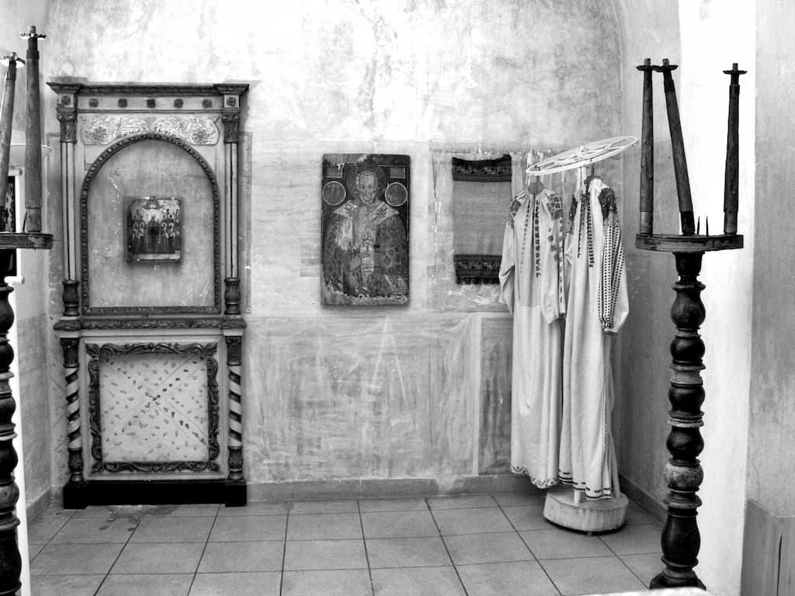
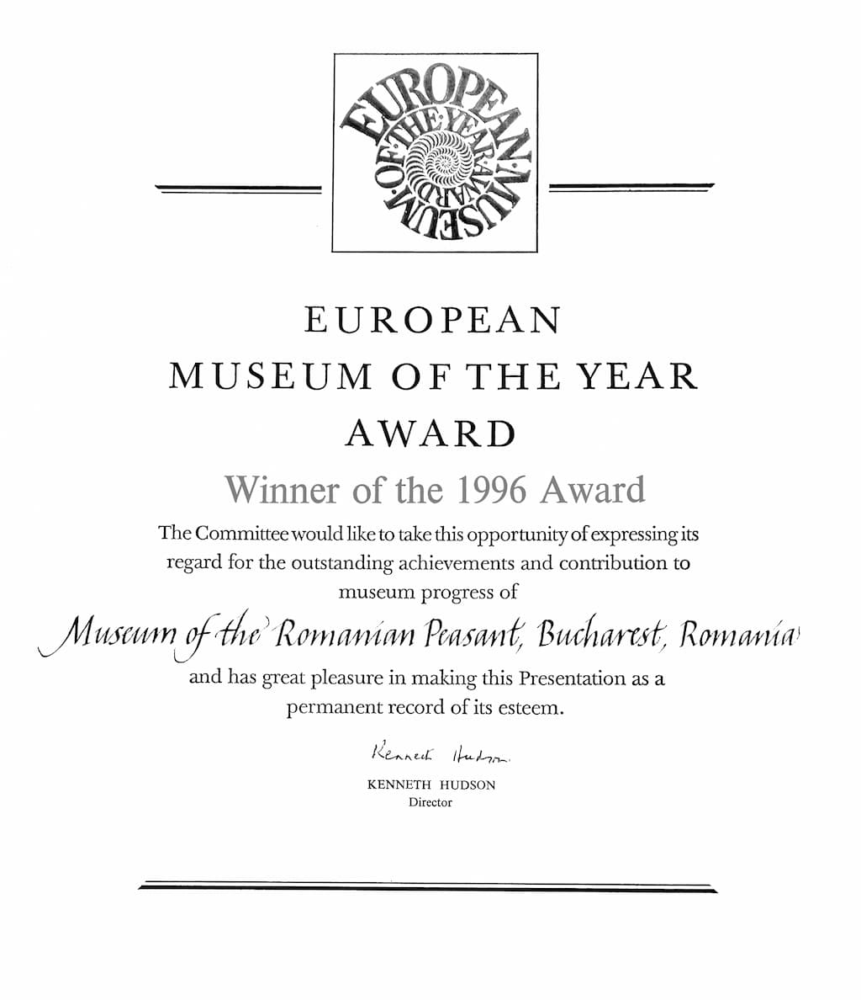
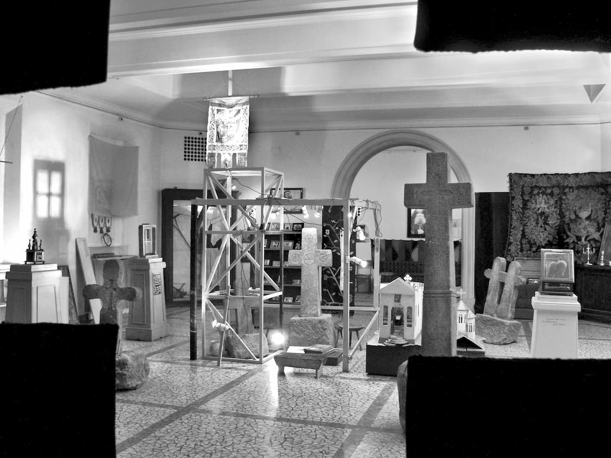

1. Crucea conținută, implicată în sensul profund al obiectului
2. a) Crucea ca semn benefic, „semnul crucii” - pe pâine, la intersecții, marcaj și semn de pomenire, pe poartă, fântână, grajd etc.
b) Crucea ornament - combinație de element ritual și ornamentație sau croi.
3. Crucea rezultat al funcției și eficienței unui obiect, arhitectură, unelte, instrumente, pârghii, țesutul de război, munca câmpului.
4. Crucea pe plante, animale (măgar) sau în anatomia omului - „o cruce de om”.
5. Sus-jos, dreapta-stânga, punctele cardinale…
6. Crucea e frumoasă prin ea însăși.
7. Crucea care nu se vede, lucrurile construite, figurile geometrice legate de cruce.
Crucea e un semn primordial, premerge semnul cristic și supraviețuiește oricărei încercări.
acolo să fie „aducerea aminte” repetată până la oboseală a anumitor lucruri vitale în procesul de naștere a muzeului?!!
Horia Bernea

Putem considera fără teama de a greși, deschiderea Muzeului Țăranului Român drept cel mai important eveniment cultural de după 1989.
Una din consecințele funeste ale domniei comuniste a fost împingerea poporului român și deci a fiecăruia dintre noi, spre o gravă criză de identitate. Valorile noastre morale și spirituale fundamentale au fost ținta unor lungi și insidioase atacuri: credința ortodoxă, instituția Bisericii, valorile culturale, personalitățile excepționale (ca repere morale ale nației), școala, au fost supuse unei lente și tenace degradări.
Deci, lovitura cea mai grea, lovitura capitală ce se pregătea, era desființarea satului și implicit a țăranului român. Proletarizarea satului, transformarea sa într-o mahala ușor maniabilă, ar fi fost în inepta concepție ceaușistă, victoria cea mai de preț a orânduirii socialiste. De unde această înverșunare distructivă?
Satul a fost în vechime și a continuat să fie până acum, în pofida tuturor catastrofelor istoriei, miezul fierbinte al conștiinței de sine a națiunii. Tradiționalismul țăranului, conservatorismul său, patriotismul său, toate puse sub semnul credinței ortodoxe au făcut posibilă existența noastră în istorie. Fără această mută, încăpățânată credință în tradiție fără apărarea ei până la sacrificiu - țăranii au apărat o patrie de lut dar și una de spirit - astăzi nu am fi existat ca națiune.
Muzeul Țăranului Român celebrează dăinuirea noastră ca popor, prin țărani, prin sat, prin credință. Sunt voci care incriminează o perspectivă idealizantă, paradisiacă asupra satului în actuala structurare a Muzeului, voci care se distanțează critic de viziunea interbelică, apolimică, asupra satului tradițional, care vorbesc de impas și chiar de o fundătură teoretică în care ne-ar conduce viziunea lui Horia Bernea și a colaboratorilor săi asupra culturii, civilizației, asupra spiritualității satului românesc.
Toate aceste rezerve pierd din vedere un lucru esențial și anume dominanta vieții satului și a țăranului român. Desigur că există și o dimensiune dionisiaca, vitalistă, magică, desigur că există asprimi, tensiuni tragice în lumea satului. Desigur că pe lângă Doina există și freneticul dans al călușarilor, că alături de Miorița, există și bocitoarele satului, profilatoarele de blesteme, că există sudalma. Desigur că obsesia dobândirii de pământ a creat tensiuni și tragedii pe care un Rebreanu le-a văzut și exprimat cu acuitate. Desigur că întâlnim practici străvechi cu caracter obscur, magic, practici de exorcizare a duhurilor, obiecte și ritualuri cu funcție apotropaică. Toate acestea se constituie într-un fond de sorginte precreștină ce a dăinuit până astăzi și coexistă în bună măsură cu credința ortodoxă. Important este să vedem ponderea lor în concepția de viață a țăranului român, în modul lui de a exista.
Expoziția de față, ce stă sub semnul tutelar al crucii, probează efectele adânci, înnoitoare schimbarea de nivel calitativ, antologic, pe care credința ortodoxă a avut-o în viața țăranului și a satului românesc. În expunerea Crucea, Horia Bernea și grupul său de specialiști evită o expunere tradițional-etnografică a prezentării de obiecte „folklorice” după criterii de gen, funcționalitate, zonă, etc., în beneficiul relevării pregnante a etosului, a atitudinii existențiale din care acestea se zămislesc. E o viziune organică a expunerii asupra satului în care toate datele se leagă, derivând din credința creștin ortodoxă a țăranului, credință ce-I dictează o atitudine unitară în raport cu marile probleme cu care se confruntă: viața, moartea, semenii, locul său în univers, raportarea la A Toate Țiitorul, la Dumnezeu.
În această perspectivă, seninătatea, echilibrul, buna cuviință, cumințenia, înțelepciunea, chiar și geometrismul obiectelor nu mai pot fi etichetate drept perspective sau idealizări, ci un adevărat mod organic de a trăi al omului, consecință a credinței care a primit-o, și-a asumat-o.
Sentimentul de seninătate, de pace profundă, de calmă spiritualitate pe care ți-o transmite expoziția Crucea, de aici derivă. Crucea este omniprezentă în viața țăranului român. Ea îi dă sens și echilibru. Cu semnul crucii încep toate. Prin cruce s-a realizat răscumpărarea și mântuirea. Satul însuși situat în centrul lumii se află în mijlocul unei cruci cosmice. Iată ce consemnează filozoful și etnologul Ernest Bernea într-o discuție cu o țărancă din Poiana Mărului în 1947: „Satul e așa în mijlocul lumii (…) noi zicem așa că este osia pământului și cerului; toate-n lume au rânduiala și rânduiala asta e.”
Osia Pământ-Cer raportată la orizontala pământului, coordonatele în care își reprezintă țăranul lumea, stau în cruce. O mare cruce cosmică, sfințită de jertfa lui Hristos, în care țăranul viețuiește. În aceste coordonate își poartă țăranul drumul și crucea destinului.
De la acest adevăr dominant, de la această viziune pornește și conceptul expunerii Crucea de la Muzeul Țăranului Român. Structurarea ideatică a expunerii este revelatoare. Parcursul expunerii cuprinde înțelesuri arhetipale, izvorâte din realitatea satului românesc: Puterea Crucii, Folosul Crucii, Frumusețea Crucii, Fast, Reculegere, Moaște, Crucea e peste tot. Ne aflăm în fața unei pregnante viziuni asupra sensului vieții țăranului ce restituie un înțeles esențial al acesteia: existența întru Hristos, sub semnul mântuitor al crucii.
Marin Gherasim
„Noi facem aici un gest public, simțim nevoia să afirmăm CRUCEA într-un moment cum este cel prezent. A opta pentru această temă este, cum ziceam, o mărturisire. Înseamnă să reafirmi omniprezența crucii, importanța și puterea ei în ziua de astăzi, într-o lume rătăcită, secularizată și îndrăcită de multe ori. Este un act militant. În cazul nostru este un act militant.”

Potrivit proiectului inițiat de actuala conducere a Muzeului Țăranului Român depus la Ministerul Culturii, în baza căruia s-au obținut banii pentru reconsolidarea clădirii, din luna mai a acestui an se va trece la strângerea expunerii Horia Bernea. Concluzia majoră care reiese din el este că expunerea Bernea va fi fotografiată, filmată și expusă în mediu virtual, pe internet.
Așa-zisa dezbatere de vineri, 5 februarie 2010, a fost o falsă dezbatere întrucât decizia fusese deja luată și era aprobată de Ministerul Culturii.
Nicăieri în proiect nu se specifică faptul că acest demers de trecere din real în virtual va fi temporar, doar pentru perioada șantierului, sau că va fi o dublare a realității, dimpotrivă.
Intenția este cât se poate de clară. Ea reiese și din comunicatul difuzat în mass-media. Au fost invitați să își dea cu părerea toți, mai puțin cei direct interesați de această problemă: prietenii lui Horia Bernea. Nicăieri nu există o dovadă adusă de un specialist – arhitect – sau de un grup de specialiști din care să reiasă faptul că începerea lucrărilor de consolidare a clădirii este sau ar trebui să fie iminentă.
Maniera în care este pusă problema este perversă:
1. trebuie neapărat să consolidăm clădirea;
2. o refacere a sălilor lui Bernea este imposibilă și inutilă întrucât se modifică drastic spațiul;
3. prin urmare, nu este mai bine să renunțăm de tot la ea?
În acest fel se șterge pentru totdeauna orice urmă a lui Horia Bernea și dispare un loc în care valorile Bisericii Ortodoxe au stat la vedere timp de 20 de ani spre folosul duhovnicesc al zecilor de mii de vizitatori.
O palmă pe obrazul lui Hristos și o nouă moarte a creatorului Muzeului.
O victorie a ideologiei corectitudinii politice deloc de neglijat.
„Dezbaterea” din data de 5 februarie a fost una consternantă pentru cei prezenți. Am audiat cu oroare discursul Ancăi Oroveanu (Răutu), reputat critic de artă și prieten intim al lui Horia Bernea. Din spusele dumneaei reieșea că a milita pentru caracterul intangibil al expunerii Crucea ar fi echivalent cu a-l iubi în chip idolatru pe creatorul Muzeului, Horia Bernea.
Singura poziție, tranșantă, limpede, lipsită de orice urmă de echivoc, au adoptat-o pictorul Sorin Dumitrescu și prietenul vechi al Muzeului, Mugur Vasiliu. Concluzia lor a fost că cine se atinge de nucleul expunerii Bernea - Crucea - atentează la identitatea muzeului. Nu ne putem imagina un țăran român ateu. Țăranul recent, categorie sociologică inventată de actuala conducere a muzeului este, în fapt, o struțo-cămilă menită să fie folosită ca instrument pentru actualii directori ai muzeului. Pe ei nu îi interesează ceea ce subzistă într-o ființă sau într-o formă de viață, ci doar ceea ce este tranzient, mișcător, rupt de orice legătură cu Dumnezeu.
Dar la ce ne putem aștepta din partea unui antropolog, crescut la școala darwinismului, adept al relativismului, fantoșă a grupului de intelectuali care pupă la popou orice mișcare a ideologiei corectitudinii politice?
Saccsiv